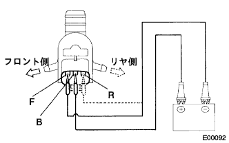

ウインドシールド ウォッシャ モータ ＆ ポンプASSY 車上点検 |
| 1. ウインドシールド ウォッシャ モータ ＆ ポンプASSY点検 |
作動点検
ウインドシールドウォッシャモータ & ポンプASSYをウォッシャージャーASSYに取り付けた状態で、ウォッシャージャーにウォッシャ液を入れる。
ウインドシールドウォッシャモータ & ポンプASSYのB端子にバッテリーのプラス、F端子にバッテリーのマイナスを接続したとき、フロント側からウォッシャ液が圧送されることを確認する。
|  |
ウインドシールドウォッシャモータ & ポンプASSYのB端子にバッテリーのプラス、R端子にバッテリーのマイナスを接続したとき、リヤ側からウォッシャ液が圧送されることを確認する。